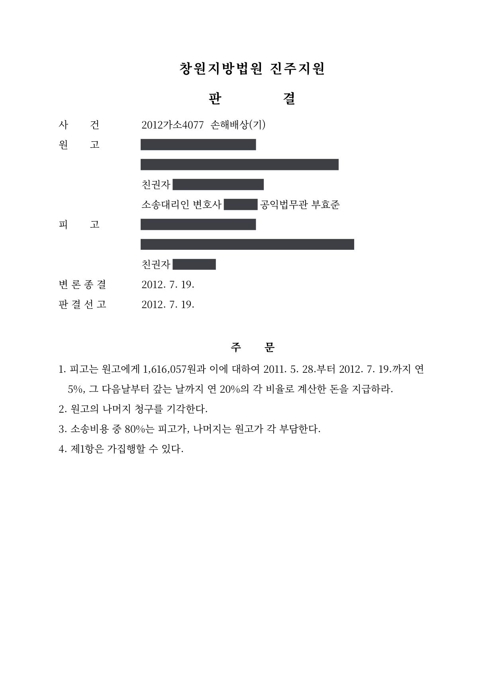

손해배상 청구소송
창원지방법원 진주지원 2012가소4077 · 피해자 대리 · 담당변호사 부효준
판결문

사건의 요지
미성년자 사이에 일어난 불법행위로 다치고 시계·안경이 파손된 피해에 대하여 약 282만 원의 배상을 구한 소액사건입니다. 법원은 치료비·물건값과 위자료 80만 원 등 약 162만 원을 인용하였습니다.
사건의 주요 내용
미성년자인 원고가 역시 미성년자인 피고의 불법행위로 입은 피해에 대하여 2,816,057원의 손해배상을 구한 소액사건으로, 원고와 피고 모두 친권자가 법정대리인으로 소송에 참여하였습니다. 판결문에 사건의 구체적인 경위는 적혀 있지 않지만, 인용된 손해 항목으로 보아 원고가 다쳐 치료를 받고 시계와 안경이 파손되는 피해를 입은 사건이며, 지연손해금은 2011년 5월부터 청구되었습니다. 부효준 변호사는 원고(피해자) 측을 대리하였습니다.
판결에는 인용된 손해 항목과 금액만 간단히 기재되어 있습니다.
법원의 판단
법원은 2012년 7월 변론을 종결한 당일 판결을 선고하면서, 치료비 326,057원, 시계·안경값 490,000원, 위자료 800,000원 합계 1,616,057원과 이에 대하여 2011년 5월 말부터 판결 선고일까지 연 5%, 그 다음 날부터 다 갚는 날까지 연 20%의 지연손해금을 피고가 지급하도록 하였습니다. 나머지 청구 120만 원은 기각되었고, 소송비용은 피고가 80%, 원고가 20%를 부담하며, 제1항은 가집행할 수 있습니다.
이 사건이 보여 주는 것
가해자가 미성년자라도 자기 행위의 책임을 인식할 수 있는 나이라면 본인이 손해배상책임을 지며, 소송은 친권자가 법정대리인으로서 수행합니다. 피해자가 미성년자인 경우에도 친권자가 대리하여 소를 제기합니다. 치료비와 파손된 물건값은 영수증으로 입증하면 그대로 인정되기 쉽지만, 위자료는 법원이 정하는 금액으로 조정될 수 있다는 점을 염두에 두어야 합니다.
비슷한 처분을 받으셨다면
행정처분은 처분이 있음을 안 날부터 90일 이내에 행정심판이나 취소소송으로 다투어야 하고, 기간이 지나면 돌이킬 수 없는 처분은 집행정지를 서둘러야 합니다. 처분서를 받은 날짜부터 확인해 드립니다.